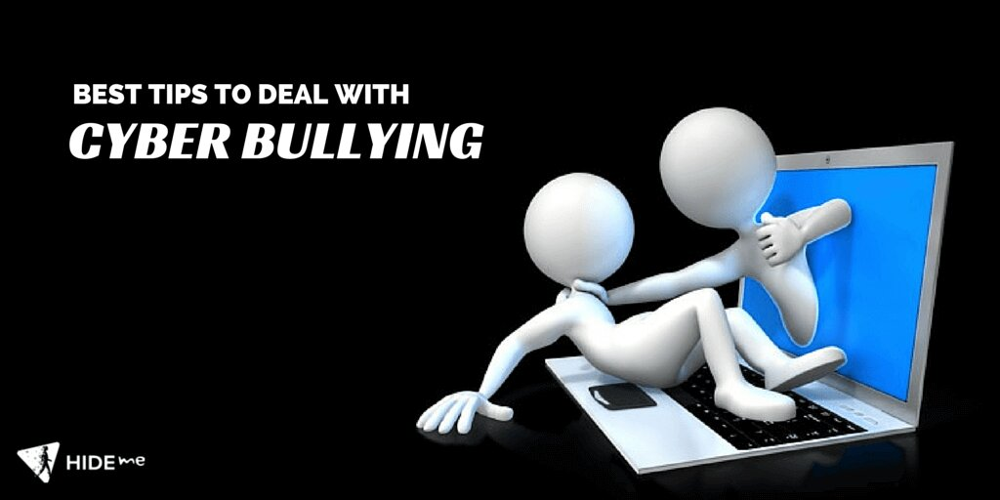

Cyberbullying Must be Stopped
The feeling of being laughed at or harassed by others,can prevent people from speaking up or trying to deal with problems.

z
Cyberbullying Must be Stopped
The feeling of being laughed at or harassed by others,can prevent people from speaking up or trying to deal with problems.
How is cyberbullying worse than real-world bullying?
In a real-world bullying situation, most incidents of bullying occur between the victim and a bully (or group of bullies) in school. These incidents can range from simple name-calling to more significant acts of bullying, such as rumor-spreading, harassment, threats, and incidents of physical harm. However, whereas victims of real-world bullying can be granted a reprieve when they go home, there simply is no escape from cyberbullying.Cyberbullying does not end when the school bell rings. It can continue at any time, throughout all hours of the night. It can come in the form of text messages, social media posts, chatroom messages, images and videos that have been altered, and many other digital forms. "People will do and say hurtful or demeaning things online that they would never say in person," says Eric Alcera, M.D., medical director for Hackensack Meridian Behavioral Health. Eric also says, “If a cyberbully decides to spread rumors or share embarrassing photos on social media, the words or images can go viral, hitting the radar of many more kids within minutes.”
Why do people cyberbully?
There have always been people who choose to behave like a bully and those who are unfortunate targets. But what is it that makes one not just choose to bully another online, but to engage in the act in such a relentless and cruel manner? One theory is that cyberbullies have difficulty feeling empathy for others. Low empathy has certainly been attributed to increased use of technology and less real-world social interaction. But this is only one facet of the cyberbullying problem.Cyberbullying also allows a bully to feel more powerful. Through the use of technology, a cyberbully can easily and effortlessly unleash a torrent of torment at any time, all from the safe harbor of their own home, with little concern or repercussions. A lack of parental monitoring is another contributing factor, as is the desire to achieve popularity through acts they feel resonate well with their peers and associates. As an interesting side note, one study states that cyberbullying is more likely to occur between current or former friends. The report further states that cyberbullying occurs seven times more frequently among teens who know each other than among people who had never been friends or dated. This often occurs due to a simple argument that escalates. Or it could simply be because one person has a secret about another that they are dying to tell. It could also be a case of revenge in response to some transgression the bully feels was committed. Jealousy is another factor, as is the desire to improve their social standing.
Let's hear from one of the victim
Changes due to the effects of cyberbullying
The changes might not be readily apparent at first, but as time goes on, you may notice one or more of the following behavioral changes that can be strong indicators of cyberbullying.